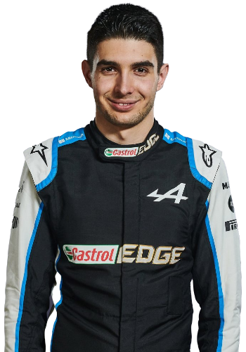

Fernando Alonso Díaz (born 29 July 1981) is a Spanish racing driver currently competing for Alpine in Formula One. He won the series' World Drivers' Championship in 2005 and 2006 with Renault, having also driven for McLaren, Ferrari, and Minardi. With Toyota, Alonso has won the 24 Hours of Le Mans twice, in 2018 and 2019, and the FIA World Endurance Championship in 2018–19, whilst winning the 24 Hours of Daytona with Wayne Taylor Racing in 2019.
Born in Oviedo, Asturias to a working-class family, Alonso began kart racing at the age of three and achieved success in local, national, and world championships. He progressed to car racing at the age of 17, winning the Euro Open by Nissan in 1999 and was fourth in the International Formula 3000 Championship of 2000. He debuted in Formula One with Minardi in 2001 before joining Renault as a test driver for 2002. Promoted to a race seat in 2003, Alonso won two drivers' championships in 2005 and 2006, becoming the youngest pole-sitter, youngest race winner, youngest world champion, and youngest two-time champion in the sport's history at the time. After finishing just one point behind eventual champion Kimi Räikkönen with McLaren in 2007, he returned to Renault for 2008 and 2009 and won two races in the former year for fifth overall. Alonso drove for Ferrari from 2010 to 2014, finishing runner-up to Sebastian Vettel in 2010, 2012, and 2013 with the title battles in 2010 and 2012 going down to the last race of the season. A second stint with McLaren from 2015 to 2018 resulted in no further success. After a two-year sabbatical, Alonso returned to Formula One in 2021 with Alpine. At the 2021 Qatar Grand Prix, Alonso scored his first podium in seven years.
At the time of his sabbatical, Alonso had won 32 Grands Prix, 22 pole positions, and 1,899 points from 311 starts. He is currently the only Spanish Formula One driver to have won either a Grand Prix or the World Championship. Alonso won the 2001 Race of Champions Nations Cup with the rally driver Jesús Puras and the motorcyclist Rubén Xaus for Team Spain and thrice entered the Indianapolis 500 in 2017, 2019 and 2020. He has been awarded the Prince of Asturias Award for Sports, the Premios Nacionales del Deporte Sportsman of the Year Award and the Gold Medal of the Royal Order of Sports Merit and has twice been inducted into the FIA Hall of Fame. Alonso runs an eSports and junior racing team and is a UNICEF Goodwill Ambassador.
 Esteban José Jean-Pierre Ocon-Khelfane (born 17 September 1996) is a French racing driver who competes for Alpine in Formula One. He made his Formula One debut for Manor Racing in the 2016 Belgian Grand Prix, replacing Rio Haryanto. Ocon was a part of the Mercedes driver development programme until his move to Renault. He took his maiden Formula One victory at the 2021 Hungarian Grand Prix.